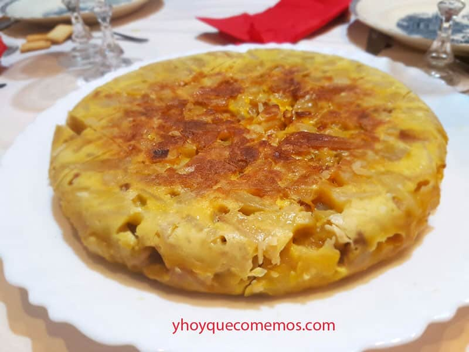

Volver
Ingredientes (4 personas)
| Producto |
Cantidad |
| Patatas nuevas | 1 kg |
| Huevos | 6–7 |
| Sal | Al gusto |
| Aceite de oliva | Para freír |

Elaboración
- Preparar las patatas. Lavar, pelar y cortar las patatas en dados o trozos del mismo grosor. Salar al gusto.
- Freír las patatas. Calentar abundante aceite de oliva en una sartén y añadir las patatas. Cocinar a fuego medio, removiendo de vez en cuando. Cuando estén blanditas pero no doradas, retirar sobre papel de cocina.
- Mezclar huevos y patatas. Batir los huevos con energía hasta que espumen. Añadir las patatas y mezclar para que se impregnen bien.
- Cocinar la tortilla. En una sartén con unas gotas de aceite, verter la mezcla. Cocinar a fuego bajo 3–4 minutos. Dar la vuelta con un plato o tapadera con cuidado. Cocinar otros 5–6 minutos por el otro lado, según el punto deseado.
- Sacar y servir. Dar una última vuelta si se desea para dorar uniformemente. Servir caliente o fría: siempre está deliciosa.